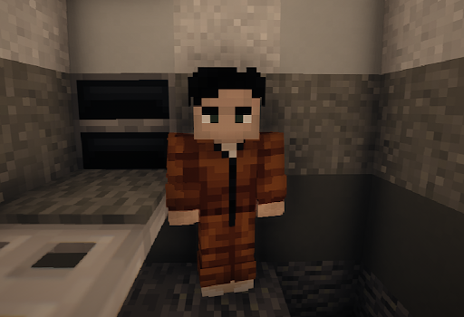

Объект
SCP-30067-SP
Класс объекта
Особые условия содержания
SCP-30067 должен содержаться в D-Блоке Зоны-37. Субъекту должен быть назначен психолог для поддержания его психического состояния в здоровом состоянии.
30067 должен использоваться в тестах и операциях с высоким уровнем смертности. Тесты с его участием должны быть усиленно охраняемы из-за его природы.
Описание
SCP-30067, ранее известный как Коннор Эдвардс, является белым мужчиной русского происхождения. Свидетельство о рождении 30067 указывает, что он родился ████, что делает его возраст ██ на момент написания. У него коричневые волосы и зелёные глаза, его рост в настоящий момент составляет 1.8 метра, а вес — 52 кг. Физические аномалии отсутствуют, исключая небольшой квадрат искусственной кожи, расположенный в нижней части его спины. Функция или прежняя функция этого участка в настоящий момент неизвестна. SCP-30067 должен рассматриваться как D-Класс и носить форму D-Класса.
Последующая информация доступна для исследователей, начиная с 2 Уровня Допуска, и лица прикрепленные к субъекту. Просмотр информации сотрудникам, не имеющим отношения к 30067 - запрещен.
Когда мозг SCP-30067 полностью прекращает функционировать, сердце перестаёт биться, либо наступает любое другое состояние, которое считалось бы смертью, рядом с трупом «строится» копия SCP-30067, содержащая все воспоминания и поведенческие особенности предыдущей копии. Процесс «построения» начинается со скелетной системы, обычно начинаясь с костей ног, и заканчивается мозгом и спинным мозгом; обычно этот процесс занимает 2-3 секунды. Во время этого процесса он нематериален, труп начинает разрушаться, распадаясь на пепельный остаток, и только после этого перестраивается в новое тело. SCP-30067, вопреки распространённому мнению, чувствует боль, когда получает травмы или когда умирает. Иногда копия SCP-30067 создаётся с аномалией, обычно с чрезмерно увеличенной или уменьшенной частью тела. Аномальные копии обычно умирают спустя 5-10 минут. Было показано, что 30067 способен контролировать, когда и где он создаётся, а также иногда способен ускорять процесс собственного восстановления. Было показано, что он имеет ограничение в 10 метров от трупа и ограничение в 30 секунд.
Биография
Коннор Эдвардс родился 24 мая, 2001 года, в городе Новосибирск, Российская Федерация (до эмиграции семьи в 2009г.), позже они переехали в штат Пенсильвания, США. Мать является русской эмигранткой второго поколения, а отец американцем.
С детства проявлял замкнутый характер, имел проблемы с законом в подростковом возрасте (мелкое хулиганство, сбыт малых партий наркотических веществ).
К 23 годам Коннор вёл маргинальный образ жизни: работа на временных стройках, периодические проблемы с наркотиками.
Первое задокументированное проявление аномалии произошло после передозировки опиоидов в заброшенном здании. Прибывшие медики обнаружили мёртвое тело Эдвардса, большое количество странного пепла и второго, живого и дезориентированного Эдвардса в соседнем помещении. Противоречивые свидетельства очевидцев и необъяснимые человеческие останки привлекли внимание Фонда. SCP-30067 был задержан и переведён в Зону-37.
Субъект демонстрирует выраженную психологическую травму от повторяющихся смертей. По его словам, он уже потерял счёт перерождениям и постепенно теряет ощущение реальности собственной личности.